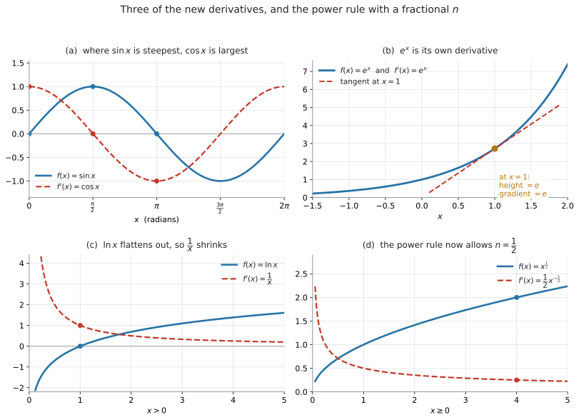
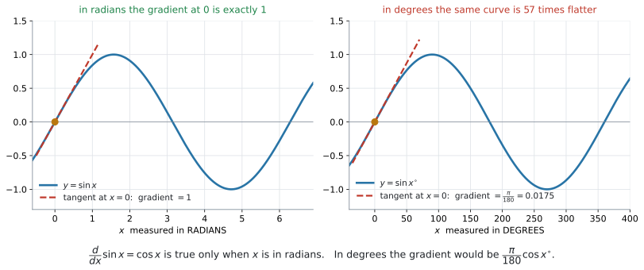

AHL 5.9a — Derivatives of \(\sin x\), \(\cos x\), \(\tan x\), \(e^{x}\), \(\ln x\) and \(x^{n}\)（三角関数・指数関数・対数関数と有理数乗の導関数）
- \(\sin x\)、\(\cos x\)、\(\tan x\)、\(e^{x}\)、\(\ln x\) の導関数を書ける。
- べき乗の公式 \(f(x) = ax^{n} \Rightarrow f'(x) = anx^{\,n-1}\) を、\(n\) が分数のときにも使える。
- \(\sqrt{x}\) や \(\dfrac{4}{\sqrt{x}}\) をべき乗の形に書き直してから微分できる。
- 項がいくつあっても、項ごとに微分できる。
- 三角関数の微分の公式が radian（弧度）のときだけ成り立つことを説明できる。
- 電卓の
AngleをRadianにしてから計算できる。
新しい導関数は \(5\) つあり、すべて印刷されています。
\[ f(x) = \sin x \ \Rightarrow \ f'(x) = \cos x \tag{1}\]
\[ f(x) = \cos x \ \Rightarrow \ f'(x) = -\sin x \tag{2}\]
\[ f(x) = \tan x \ \Rightarrow \ f'(x) = \frac{1}{\cos^{2} x} \tag{3}\]
\[ f(x) = e^{x} \ \Rightarrow \ f'(x) = e^{x} \tag{4}\]
\[ f(x) = \ln x \ \Rightarrow \ f'(x) = \frac{1}{x} \tag{5}\]
試験中に配られるので、覚える必要はありません。 覚えるべきなのは、どれを使う場面なのかと、電卓を radian にしておくことの \(2\) つです。
The idea
1. SL では、べき乗しか微分できませんでした
SL 5.3 で使った公式は、\(1\) 本だけでした。
\[ f(x) = a x^{n} \ \Rightarrow \ f'(x) = a\,n\,x^{\,n-1} \tag{6}\]
この公式も、公式集の 5.3 の欄にあります。 ただし印刷されているのは \(f(x) = x^{n} \Rightarrow f'(x) = nx^{\,n-1}\) で、係数 \(a\) が付いていません。 試験に出るのは係数の付いた形なので、覚えるのは上の形にしてください（SL 5.3）。
\(3x^{5}\) も \(\dfrac{6}{x^{2}} = 6x^{-2}\) も、これで微分できます。けれども \(\sin x\) や \(e^{x}\) は、べき乗の形をしていません。 ですから、この公式では手が出ませんでした。
この 5.9a で増えるのは、次の \(2\) つです。
- \(n\) が分数のときも使えるようになる（\(\sqrt{x}\) が微分できる）
- べき乗以外の \(5\) つの導関数が加わる（\(\sin\)、\(\cos\)、\(\tan\)、\(e^{x}\)、\(\ln x\)）
シラバスの 5.9 は、これで終わりではありません。\(2\) つの式を組み合わせた形の微分が AHL 5.9b に、同時に変わる \(2\) つの量の扱いが AHL 5.9c にあります。このページは、その \(2\) つの土台になります。

図 1 に、\(4\) つの例をまとめました。青が \(f\)、赤の破線が \(f'\) です。
- \(\sin x\) がいちばん急なところ（\(x = 0\)）で、\(\cos x\) がいちばん大きくなっています
- \(e^{x}\) は、高さと傾きがいつも同じ数です
- \(\ln x\) は右へ行くほど平らになり、それに合わせて \(\dfrac{1}{x}\) が小さくなっています
- \(\sqrt{x}\) も、べき乗の公式で微分できるようになります
2. \(n\) が分数でもよくなります
シラバスの Content 欄は、この項目の \(1\) 行目をこう書いています。
The derivatives of \(\sin x\), \(\cos x\), \(\tan x\), \(e^{x}\), \(\ln x\), \(x^{n}\) where \(n \in \mathbb{Q}\).
\(n \in \mathbb{Q}\) は「\(n\) は rational number（有理数、つまり分数で書ける数）」という意味です。SL のシラバスでは \(n \in \mathbb{Z}\)（整数）でした。
公式そのものは変わりません。 変わったのは、\(n\) に入れてよい数の範囲だけです。
\[ f(x) = x^{\frac{1}{2}} \ \Rightarrow \ f'(x) = \frac{1}{2}x^{-\frac{1}{2}} \]
\[ f(x) = x^{\frac{2}{3}} \ \Rightarrow \ f'(x) = \frac{2}{3}x^{-\frac{1}{3}} \]
やることは SL のときと同じ \(2\) 手です。指数を前に下ろして掛け、指数から \(1\) を引く（SL 5.3）。
\(\dfrac{1}{2} - 1 = -\dfrac{1}{2}\)、\(\dfrac{2}{3} - 1 = -\dfrac{1}{3}\) です。分数から \(1\) を引くところで計算を間違える人が多いので、そこだけ声に出して確かめてください。
微分する前に、べき乗の形に書き直します
試験の問題文は \(x^{\frac{1}{2}}\) とは書かず、\(\sqrt{x}\) と書いてきます。そのままでは公式に入りません。 先に書き直します。
| 問題文の形 | べき乗の形 | 微分すると |
|---|---|---|
| \(\sqrt{x}\) | \(x^{\frac{1}{2}}\) | \(\dfrac{1}{2}x^{-\frac{1}{2}}\) |
| \(\dfrac{1}{\sqrt{x}}\) | \(x^{-\frac{1}{2}}\) | \(-\dfrac{1}{2}x^{-\frac{3}{2}}\) |
| \(\dfrac{4}{\sqrt{x}}\) | \(4x^{-\frac{1}{2}}\) | \(-2x^{-\frac{3}{2}}\) |
| \(x\sqrt{x}\) | \(x^{\frac{3}{2}}\) | \(\dfrac{3}{2}x^{\frac{1}{2}}\) |
| \(\sqrt[3]{x^{2}}\) | \(x^{\frac{2}{3}}\) | \(\dfrac{2}{3}x^{-\frac{1}{3}}\) |
この書き直しは SL 1.5 の指数法則です。 新しい規則ではありません。
3. 新しい \(5\) つの導関数
式 1 から 式 5 までの \(5\) つを、表にまとめます。
| \(f(x)\) | \(f'(x)\) | 気をつけるところ |
|---|---|---|
| \(\sin x\) | \(\cos x\) | 符号は付きません |
| \(\cos x\) | \(-\sin x\) | マイナスが付きます |
| \(\tan x\) | \(\dfrac{1}{\cos^{2} x}\) | \(2\) 乗するのは \(\cos x\) 全体です。\(\cos x = 0\) になる \(x\) では考えません |
| \(e^{x}\) | \(e^{x}\) | 変わりません |
| \(\ln x\) | \(\dfrac{1}{x}\) | \(x > 0\) でだけ考えます |
\(\sin x\) を微分すると \(\cos x\)、\(\cos x\) を微分すると \(-\sin x\) です。もう \(2\) 回微分すると \(\sin x\) に戻ります。
\[ \sin x \ \to \ \cos x \ \to \ -\sin x \ \to \ -\cos x \ \to \ \sin x \]
マイナスが出るのは \(\cos\) を微分したときです。この向きだけ覚えておけば、符号で迷いません。
\(\tan x\) の \(2\) 乗は、\(\cos x\) 全体に付きます
公式集は \(\dfrac{1}{\cos^{2} x}\) と書いています。\(\cos^{2}x\) は \((\cos x)^{2}\)、つまり \(\cos x\) を計算してから \(2\) 乗するという意味です。
\[ \frac{1}{\cos^{2} x} = \frac{1}{(\cos x)^{2}} \]
\(\cos(x^{2})\) でも \(\cos(2x)\) でもありません。\(x = \dfrac{\pi}{4}\) で確かめます。
\[ \cos\frac{\pi}{4} = \frac{1}{\sqrt{2}} \quad \Longrightarrow \quad \frac{1}{\left(\frac{1}{\sqrt{2}}\right)^{2}} = \frac{1}{\frac{1}{2}} = 2 \]
\(\tan x\) の傾きは \(x = \dfrac{\pi}{4}\) で \(2\) です。
教科書によっては、これを \(\sec^{2}x\) と書きます。AI の公式集は \(\dfrac{1}{\cos^{2}x}\) の形で印刷しています。 答案では公式集と同じ形で書いておけば確実です。
\(e^{x}\) に、べき乗の公式は使えません
\(e^{x}\) は「\(x\) が指数の位置にある」形です。\(x^{n}\) は「\(x\) が下にある」形です。別ものなので、公式も別です。
\[ \frac{d}{dx}\left(x^{3}\right) = 3x^{2}, \qquad \frac{d}{dx}\left(e^{x}\right) = e^{x} \]
\(e^{x}\) を微分して \(xe^{x-1}\) とするのは、この \(2\) つを取り違えた形です。\(x\) が上にあるか下にあるかを、先に見てください。
4. \(\sin\)、\(\cos\)、\(\tan\) の公式は、radian のときだけです
式 1 の \(\dfrac{d}{dx}\sin x = \cos x\) は、\(x\) を radian で測っているときにだけ成り立ちます。

図 2 の左と右は、同じ形の曲線です。違うのは横軸の目盛りだけです。
- 左（radian）… \(x = 0\) での傾きは、ちょうど \(1\)。\(\cos 0 = 1\) と一致します
- 右（degree）… \(x = 0\) での傾きは \(\dfrac{\pi}{180} = 0.0175\)。\(\cos 0 = 1\) とは合いません
degree では、\(1\) 周が \(360\) という大きな数で測られます。radian の \(1\) 周は \(2\pi = 6.28\) ですから、目盛りが \(\dfrac{360}{2\pi} = 57.3\) 倍細かくなり、グラフは横に \(57.3\) 倍引き伸ばされます。引き伸ばせば、傾きはそのぶん緩くなります。\(\dfrac{\pi}{180}\) という余分な数が付いてしまうので、公式が使えるのは radian のときだけです。
radian とは
radian（弧度）は、角を実数で測るやり方です。degree のように \(360\) で \(1\) 周と決めるのではなく、半径 \(1\) の円の弧の長さで角を測ります。
半径 \(1\) の円の周は \(2\pi\) ですから、\(1\) 周が \(2\pi\) radian です。半周なら \(\pi\) radian、つまり
\[ 180^{\circ} = \pi \ \text{radian} \tag{7}\]
です。この \(1\) 本から、必要な変換はすべて作れます。
| degree | radian |
|---|---|
| \(30^{\circ}\) | \(\dfrac{\pi}{6}\) |
| \(45^{\circ}\) | \(\dfrac{\pi}{4}\) |
| \(60^{\circ}\) | \(\dfrac{\pi}{3}\) |
| \(90^{\circ}\) | \(\dfrac{\pi}{2}\) |
| \(180^{\circ}\) | \(\pi\) |
| \(360^{\circ}\) | \(2\pi\) |
\(1\) radian は \(\dfrac{180}{\pi} = 57.3^{\circ}\) ぐらいです。この項目で必要なのは、ここまでです。 radian そのもの（扇形の弧長や面積での使い方）は AHL 3.7 で扱います。
\(\sin 2\) と書いてあったら、\(2^{\circ}\) ではなく \(2\) radian の意味です。degree のときは、必ず \(\sin 30^{\circ}\) のように \(^{\circ}\) が付きます。
シラバスの AHL 2.9 の Guidance 欄にも、そう書かれています。
Radian measure should be assumed unless otherwise indicated by the use of the degree symbol, for example with \(f(x) = \sin x^{\circ}\).
HL の試験では、radian が既定です
シラバスの AHL Topic 3 の冒頭に、この一行があります。
On HL examination papers radian measure should be assumed unless otherwise indicated.
SL のときとは逆になります。 SL では degree が中心でしたが（SL 3.4）、HL では \(^{\circ}\) が書いていなければ radian です。
ですから、電卓の設定はこうします。
ctrl + doc → Document Settings → Angle: Radian\(\sin 40^{\circ}\) のように \(^{\circ}\) が書いてある問題も出ます。そのときも、設定は Radian のままで構いません。 度の記号を自分で入れれば、正しく計算されます（GDC 第1節）。
設定を行き来すると、戻し忘れが起きます。設定を変え忘れたまま計算すると、まったく違う値が出ます。しかもエラーにはならないので、気づきにくい失点です。
5. 項ごとに微分します
式がいくつかの項の和でできているときは、項ごとに微分して、そのまま並べます。 SL のときと同じです。
\[ f(x) = 3\sin x - 2e^{x} + \ln x \]
\[ f'(x) = 3\cos x - 2e^{x} + \frac{1}{x} \]
係数はそのまま残ります。 \(3\sin x\) の微分は \(\cos x\) ではなく \(3\cos x\) です。
\(x = 1\) を入れてみます。
\[ f'(1) = 3\cos 1 - 2e^{1} + 1 = 1.62 - 5.44 + 1 = -2.82 \]
この \(\cos 1\) は radian です。 電卓が degree のままだと \(3\cos 1^{\circ} = 3.00\) になり、答えが \(-1.44\) とずれます。
6. この \(5\) つを、どこで使うか
シラバスは、この項目に次のリンクを付けています。
Link to: maximum and minimum points (SL5.6) and optimisation (SL5.7).
つまり、SL でやったことが、そのまま使える関数の種類だけ広がるということです。
このページでは、新しい解き方は出てきません。 微分できる関数が増えるだけです。\(\sqrt{x^{2}+9}\) のように、根号の中身が \(x\) そのものでない形は AHL 5.9b で扱います。
Why it works
なぜ radian でないと成り立たないのか
導関数は「\(x\) が少し増えたとき、\(y\) がどれだけ増えるか」の割合です（SL 5.1）。ですから、\(x\) を何で測るかを変えると、値が変わります。
\(x = 0\) のあたりで考えます。radian なら、\(x\) が小さいとき
\[ \sin x \approx x \]
です。\(x = 0.1\) なら \(\sin 0.1 = 0.0998\)、\(x = 0.01\) なら \(\sin 0.01 = 0.0099998\)。ほとんど同じ数になります。だから傾きは \(1\) です。
degree で同じことをすると
\[ \sin(0.1^{\circ}) = 0.00174\ldots \]
で、\(x\) の \(\dfrac{1}{57.3}\) ほどしかありません。傾きは \(\dfrac{\pi}{180} = 0.0175\) になります。
この違いは、\(\sin\) という関数のせいではなく、横軸の目盛りの取り方のせいです。degree は \(1\) 周を \(360\) に切るので、radian の \(2\pi \approx 6.28\) に比べて目盛りが細かく、グラフが横に引き伸ばされます。引き伸ばせば、傾きはそのぶん緩くなります。
\(\sin x \approx x\) が成り立つ測り方、つまり radian のときにだけ、\(\dfrac{d}{dx}\sin x = \cos x\) という余分な数の付かない形になります。radian は、微分がいちばんきれいになるように選ばれた測り方だと思ってください。
なぜ \(e^{x}\) だけが自分自身なのか
\(y = 2^{x}\) でも \(y = 3^{x}\) でも、微分するともとの形に比例した式になります。
\[ \frac{d}{dx}\left(a^{x}\right) = k \times a^{x} \]
この \(k\) は \(a\) によって決まる数で、\(a = 2\) なら \(k = 0.693\)、\(a = 3\) なら \(k = 1.099\) です。
\(a\) を \(2\) から \(3\) へ動かすと、\(k\) は \(0.693\) から \(1.099\) へ動きます。 途中のどこかで \(k = 1\) になるはずです。その \(a\) の値が \(e = 2.718\ldots\) です。
\(k = 1\) ということは
\[ \frac{d}{dx}\left(e^{x}\right) = 1 \times e^{x} = e^{x} \]
つまり、微分しても変わらないということです。図 1 の (b) で、\(x = 1\) における高さと傾きがどちらも \(e\) になっているのは、このためです。
\(e\) は「たまたまきれいな数」ではなく、微分が自分自身になるように選んだ数です。
Worked examples
問題文は英語です。意味が理解できなかったら、問題文の下の「日本語訳」を開いてください。解説は日本語です。
例題 1 Let \(f(x) = 3\sin x - 2e^{x} + \ln x\), for \(x > 0\).
(a) Find \(f'(x)\).
(b) Find \(f'(1)\), giving your answer to three significant figures.
日本語訳
\(x > 0\) について \(f(x) = 3\sin x - 2e^{x} + \ln x\) とします。
to three significant figures は「有効数字 \(3\) 桁で」という意味です。
(a) \(f'(x)\) を求めなさい。
(b) \(f'(1)\) を、有効数字 \(3\) 桁で求めなさい。
(a) 項ごとに微分します（第5節）。使うのは 式 1、式 4、式 5 の \(3\) つです。
- \(3\sin x\) → \(3\cos x\)（係数 \(3\) はそのまま）
- \(-2e^{x}\) → \(-2e^{x}\)（\(e^{x}\) は変わらない）
- \(\ln x\) → \(\dfrac{1}{x}\)
\[ f'(x) = 3\cos x - 2e^{x} + \frac{1}{x} \]
(b) \(x = 1\) を入れます。電卓を Radian にしてから計算してください（GDC 第1節）。
\[ f'(1) = 3\cos 1 - 2e + 1 \]
\[ = 1.6209 - 5.4366 + 1 = -2.8157 \approx -2.82 \]
検算。 電卓の numerical derivative に \(f(x)\) そのものを入れて \(x = 1\) で微分すると \(-2.82\) です ✓（GDC 第2節）
(a) \[ f'(x) = 3\cos x - 2e^{x} + \frac{1}{x} \]
(b) \[ f'(1) = 3\cos 1 - 2e + 1 = -2.82 \]
例題 2 Let \(f(x) = \sqrt{x} + \dfrac{4}{\sqrt{x}}\), for \(x > 0\).
(a) Write \(f(x)\) in the form \(x^{p} + 4x^{q}\).
(b) Find \(f'(x)\).
(c) Show that \(f'(4) = 0\), and write down the coordinates of the stationary point of the graph of \(f\).
日本語訳
\(x > 0\) について \(f(x) = \sqrt{x} + \dfrac{4}{\sqrt{x}}\) とします。
in the form は「〜の形に」、stationary point は「\(f'(x) = 0\) になる点」という意味です。
(a) \(f(x)\) を \(x^{p} + 4x^{q}\) の形で書きなさい。
(b) \(f'(x)\) を求めなさい。
(c) \(f'(4) = 0\) であることを示し、\(f\) のグラフの stationary point の座標を書きなさい。
(a) 根号をべき乗に直します（表 1）。
\[ \sqrt{x} = x^{\frac{1}{2}}, \qquad \frac{4}{\sqrt{x}} = 4x^{-\frac{1}{2}} \]
\[ f(x) = x^{\frac{1}{2}} + 4x^{-\frac{1}{2}} \]
(b) べき乗の公式を、それぞれの項に使います（式 6）。\(n\) が分数でも、やることは同じです（第2節）。
\[ \frac{d}{dx}\left(x^{\frac{1}{2}}\right) = \frac{1}{2}x^{\frac{1}{2}-1} = \frac{1}{2}x^{-\frac{1}{2}} \]
\[ \frac{d}{dx}\left(4x^{-\frac{1}{2}}\right) = 4 \times \left(-\frac{1}{2}\right)x^{-\frac{1}{2}-1} = -2x^{-\frac{3}{2}} \]
\[ f'(x) = \frac{1}{2}x^{-\frac{1}{2}} - 2x^{-\frac{3}{2}} \]
(c) \(x = 4\) を入れます。\(4^{\frac{1}{2}} = 2\)、\(4^{\frac{3}{2}} = 8\) です。
\[ f'(4) = \frac{1}{2} \times \frac{1}{2} - 2 \times \frac{1}{8} = \frac{1}{4} - \frac{1}{4} = 0 \]
\(y\) 座標も要ります（SL 5.6）。
\[ f(4) = \sqrt{4} + \frac{4}{\sqrt{4}} = 2 + 2 = 4 \]
stationary point（停留点）は \((4,\ 4)\) です。
検算。 \(f'(1) = \dfrac{1}{2} - 2 = -\dfrac{3}{2} < 0\)、\(f'(9) = \dfrac{1}{6} - \dfrac{2}{27} = \dfrac{5}{54} > 0\) です。\(x = 4\) の前で減り、後ろで増えているので、\((4,\ 4)\) は minimum です ✓
(a) \[ f(x) = x^{\frac{1}{2}} + 4x^{-\frac{1}{2}} \]
(b) \[ f'(x) = \frac{1}{2}x^{-\frac{1}{2}} - 2x^{-\frac{3}{2}} \]
(c) \[ f'(4) = \frac{1}{2}\left(\frac{1}{2}\right) - 2\left(\frac{1}{8}\right) = \frac{1}{4} - \frac{1}{4} = 0 \] \[ f(4) = 2 + 2 = 4 \] \[ \text{stationary point}: \ (4,\ 4) \]
例題 3 The curve \(y = \tan x\) passes through the point where \(x = \dfrac{\pi}{4}\).
(a) Find the gradient of the curve at this point.
(b) Find the equation of the tangent to the curve at this point, giving your answer in the form \(y = mx + c\).
日本語訳
曲線 \(y = \tan x\) は、\(x = \dfrac{\pi}{4}\) の点を通ります。
the gradient of the curve は「その点での接線の傾き」という意味です。
(a) この点における曲線の傾きを求めなさい。
(b) この点における接線の方程式を、\(y = mx + c\) の形で求めなさい。
(a) \(\tan x\) の導関数は \(\dfrac{1}{\cos^{2}x}\) です（式 3）。\(2\) 乗するのは \(\cos x\) 全体です（第3節）。
\[ \frac{dy}{dx} = \frac{1}{\cos^{2}x} \]
\[ \cos\frac{\pi}{4} = \frac{1}{\sqrt{2}} \quad \Longrightarrow \quad \cos^{2}\frac{\pi}{4} = \frac{1}{2} \]
\[ \frac{dy}{dx} = \frac{1}{\frac{1}{2}} = 2 \]
(b) 接線には、傾きのほかに通る点が要ります（SL 5.4）。
\[ y = \tan\frac{\pi}{4} = 1 \quad \Longrightarrow \quad \text{点は} \ \left(\frac{\pi}{4},\ 1\right) \]
\[ y - 1 = 2\left(x - \frac{\pi}{4}\right) \]
\[ y = 2x - \frac{\pi}{2} + 1 = 2x - 0.571 \]
検算。 \(x = \dfrac{\pi}{4} = 0.7854\) を代入すると \(2(0.7854) - 0.571 = 1.00\) ✓ 接点を通っています。
(a) \[ \frac{dy}{dx} = \frac{1}{\cos^{2}x} \] \[ \frac{dy}{dx}\bigg|_{x = \frac{\pi}{4}} = \frac{1}{\left(\frac{1}{\sqrt{2}}\right)^{2}} = 2 \]
(b) \[ y = \tan\frac{\pi}{4} = 1 \] \[ y - 1 = 2\left(x - \frac{\pi}{4}\right) \] \[ y = 2x - 0.571 \]
例題 4 The depth of water in a harbour, in metres, is modelled by
\[ h(t) = 4 + 2\sin t, \qquad 0 \leq t \leq 12 \]
where \(t\) is the time in hours after midnight.
(a) Find \(\dfrac{dh}{dt}\).
(b) Find the value of \(\dfrac{dh}{dt}\) when \(t = 1\).
(c) Interpret your answer to part (b) in the context of the model.
日本語訳
ある港の水深（メートル）が、上の式でモデル化されています。\(t\) は真夜中からの時間（時間単位）です。
Interpret ... in the context of the model は「モデルの文脈で、答えの意味を説明しなさい」という意味です。
(a) \(\dfrac{dh}{dt}\) を求めなさい。
(b) \(t = 1\) のときの \(\dfrac{dh}{dt}\) の値を求めなさい。
(c) (b) の答えの意味を、このモデルの文脈で説明しなさい。
(a) 定数 \(4\) の微分は \(0\)、\(2\sin t\) の微分は \(2\cos t\) です（式 1）。
\[ \frac{dh}{dt} = 2\cos t \]
(b) \(t\) に \(^{\circ}\) が付いていないので、radian です（第4節）。
\[ \frac{dh}{dt}\bigg|_{t=1} = 2\cos 1 = 1.0806 \approx 1.08 \]
(c) 数値だけでは点になりません。単位を付けて、増えているのか減っているのかを言ってください（SL 5.1）。
試験ではこう書く
One hour after midnight the depth of the water is increasing at a rate of \(1.08\) metres per hour.
（真夜中の \(1\) 時間後、水深は毎時 \(1.08\) メートルの割合で増えている、という意味です。）
検算。 \(t = 1\) radian のとき \(\cos 1 > 0\) なので \(\dfrac{dh}{dt} > 0\)、つまり増えています。\(h(1) = 5.68\)、\(h(1.1) = 5.78\) と、実際に増えています ✓
(a) \[ \frac{dh}{dt} = 2\cos t \]
(b) \[ \frac{dh}{dt} = 2\cos 1 = 1.08 \]
(c) One hour after midnight the depth is increasing at a rate of \(1.08\) metres per hour.
Common errors
誤り：\(\dfrac{d}{dx}(\tan x)\) を \(\dfrac{1}{\cos x^{2}}\) や \(\dfrac{1}{\cos 2x}\) と書く。
\(\cos^{2}x\) は \((\cos x)^{2}\) です。\(\cos\) を計算してから \(2\) 乗します（第3節）。
正しくは：\(x = \dfrac{\pi}{4}\) なら \(\cos\dfrac{\pi}{4} = 0.7071\)、\(0.7071^{2} = 0.5\)、答えは \(2\) です。
Degree のまま計算する
誤り：\(3\cos 1 - 2e + 1\) を degree の設定で計算して、\(-1.44\) と答える。
degree だと \(\cos 1^{\circ} = 0.9998\) になり、radian の \(\cos 1 = 0.5403\) とはまったく違う値です。
正しくは：ctrl + doc → Document Settings → Angle: Radian にしてから計算します。答えは \(-2.82\) です（GDC 第1節）。
エラーは出ません。 見た目は正常なまま、値だけがずれます。
誤り：\(\sqrt{x}\) を見て手が止まる、あるいは \(\dfrac{1}{2\sqrt{x}}\) を当てずっぽうで書く。
べき乗の公式は、\(x^{n}\) の形になっていないと使えません。
正しくは：\(x^{\frac{1}{2}}\)、\(4x^{-\frac{1}{2}}\) に直してから微分します（表 1）。
誤り：\(x^{\frac{1}{2}}\) を微分して \(\dfrac{1}{2}x^{\frac{1}{2}}\) と書く（指数を減らし忘れる）。あるいは \(-\dfrac{1}{2}\) を \(\dfrac{1}{2}\) と書く。
正しくは：\(\dfrac{1}{2} - 1 = -\dfrac{1}{2}\) なので \(\dfrac{1}{2}x^{-\frac{1}{2}}\) です（第2節）。
分数の引き算だけ、紙の端で書いてから入れてください。
Using your GDC (TI-Nspire CX II)
AI HL は、\(3\) つの paper すべてで電卓が使えます。この項目では、設定がいちばん大事です。
1. Angle を Radian にする
ctrl + doc → Document Settings → Angle: RadianHL の試験では、\(^{\circ}\) が書いていなければ radian です（第4節）。試験が始まったら、まずここを変えてください。
計算画面で \(\sin 1\) を計算してください。
| 出た値 | 設定 |
|---|---|
| \(0.841\ldots\) | Radian（正しい） |
| \(0.0175\ldots\) | Degree（直してください） |
\(1\) 秒で確かめられます。計算を始める前に、毎回これをやってください。
Degree に戻さなくても、\(40^{\circ}\) のように度の記号を自分で入れれば、radian 設定のまま正しく計算できます。度の記号は、記号パレットから選べます。
設定を行き来するより、こちらのほうが間違えにくいです。設定を変えた場合は、変えたことを忘れないでください。
2. \(1\) 点での微分係数を確かめる
\(f'(x)\) の式は自分で書きます。電卓が返すのは、ある \(1\) 点での値だけです（SL 5.3）。
menu → 4: Calculus → 1: Numerical Derivative at a Point
式 3sin(x)-2e^(x)+ln(x) 点 x = 1返るのは \(-2.82\) です。自分で作った \(f'(x) = 3\cos x - 2e^{x} + \dfrac{1}{x}\) に \(x = 1\) を入れても \(-2.82\) ✓
\(1\) 点で合えば、式はまず合っています。 符号の落とし忘れは、たいていこれで見つかります。
e^x のキーで入れます
キーボードの e の文字を打つと、ただの変数になってしまいます（AHL 1.9）。
3. グラフで確かめる
\(f\) と、自分で作った \(f'\) を、同じ画面に描きます。
f1(x) = 3sin(x)-2e^(x)+ln(x)
f2(x) = 3cos(x)-2e^(x)+1/x\(f_1\) が水平なところで、\(f_2\) が \(x\) 軸を横切っていれば合っています。（SL 5.6）
図 1 の (a) が、その例です。\(\sin x\) が水平になる \(x = \dfrac{\pi}{2}\) で、\(\cos x\) が \(x\) 軸を横切っています。
この確かめ方が使えるのは、\(f\) が水平になるところがある式のときです。\(e^{x}\) や \(\ln x\) のように、ずっと増え続ける式では使えません。そのときは GDC 第2節 の \(1\) 点での確かめを使ってください。
4. 確かめ方
\(4\) つあります。
AngleがRadianか（表 5）- \(\cos\) を微分したところに、マイナスが付いているか
- 係数が残っているか（\(3\sin x \to 3\cos x\)）
- numerical derivative の値と、自分の \(f'(x)\) に代入した値が合うか
Exercises
各問題に、折りたたみが3つ付いています。日本語訳、解答例（答案用紙に書くべきこと。英語です）、解説（なぜそうなるか。日本語です）。
まず自分で解いて、次に解答例と見くらべてください。解説は、合わなかったときだけ開けば十分です。
1 Differentiate \(y = 4\sin x - 3\cos x\) with respect to \(x\).
日本語訳
\(y = 4\sin x - 3\cos x\) を \(x\) について微分しなさい。
with respect to は「〜について」という意味です。\(x\) について微分しなさい、ということです。
\[ \frac{dy}{dx} = 4\cos x + 3\sin x \]
2 Let \(f(x) = 2e^{x} + 5\ln x\), for \(x > 0\). Find \(f'(1)\), giving your answer to three significant figures.
日本語訳
\(x > 0\) について \(f(x) = 2e^{x} + 5\ln x\) とします。\(f'(1)\) を、有効数字 \(3\) 桁で求めなさい。
\[ f'(x) = 2e^{x} + \frac{5}{x} \] \[ f'(1) = 2e + 5 = 10.4 \]
3 Let \(y = x^{\frac{3}{2}}\), for \(x \geq 0\). Find \(\dfrac{dy}{dx}\), and hence find the gradient of the curve when \(x = 4\).
日本語訳
\(x \geq 0\) について \(y = x^{\frac{3}{2}}\) とします。\(\dfrac{dy}{dx}\) を求め、それを使って \(x = 4\) のときの曲線の傾きを求めなさい。
hence は「それを使って」という意味です。前の答えを使いなさい、という指示です。
\[ \frac{dy}{dx} = \frac{3}{2}x^{\frac{1}{2}} \] \[ \frac{dy}{dx}\bigg|_{x=4} = \frac{3}{2}\sqrt{4} = \frac{3}{2}(2) = 3 \]
指数を前に下ろして、\(1\) を引きます（第2節）。
\[ \frac{3}{2} - 1 = \frac{1}{2} \]
ここが分数の引き算です。 \(\dfrac{3}{2} - 1 = \dfrac{3}{2} - \dfrac{2}{2} = \dfrac{1}{2}\) と、\(1\) を \(\dfrac{2}{2}\) に直してから引くと確実です。
\(x^{\frac{1}{2}} = \sqrt{x}\) なので、\(x = 4\) では \(2\) です。
4 Let \(f(x) = \dfrac{8}{\sqrt{x}}\), for \(x > 0\). Find \(f'(4)\).
日本語訳
\(x > 0\) について \(f(x) = \dfrac{8}{\sqrt{x}}\) とします。\(f'(4)\) を求めなさい。
\[ f(x) = 8x^{-\frac{1}{2}} \] \[ f'(x) = 8\left(-\frac{1}{2}\right)x^{-\frac{3}{2}} = -4x^{-\frac{3}{2}} \] \[ f'(4) = -\frac{4}{4^{\frac{3}{2}}} = -\frac{4}{8} = -0.5 \]
まずべき乗の形に書き直します（表 1）。\(\dfrac{8}{\sqrt{x}} = 8x^{-\frac{1}{2}}\) です。
指数の引き算は \(-\dfrac{1}{2} - 1 = -\dfrac{3}{2}\)。負の数から \(1\) を引くので、絶対値は大きくなります。
\(4^{\frac{3}{2}} = \left(\sqrt{4}\right)^{3} = 2^{3} = 8\) です。
検算。 \(f(x) = \dfrac{8}{\sqrt{x}}\) は \(x\) が増えると減る式なので、\(f'(4)\) は負のはずです ✓
5 Find the gradient of the curve \(y = \tan x\) at the point where \(x = \dfrac{\pi}{3}\).
日本語訳
曲線 \(y = \tan x\) の、\(x = \dfrac{\pi}{3}\) の点における傾きを求めなさい。
\[ \frac{dy}{dx} = \frac{1}{\cos^{2}x} \] \[ \cos\frac{\pi}{3} = \frac{1}{2} \quad \Longrightarrow \quad \cos^{2}\frac{\pi}{3} = \frac{1}{4} \] \[ \frac{dy}{dx} = \frac{1}{\frac{1}{4}} = 4 \]
\(\dfrac{\pi}{3}\) は \(60^{\circ}\) です（表 3）。\(\cos 60^{\circ} = \dfrac{1}{2}\) ですから、\(2\) 乗して \(\dfrac{1}{4}\)、逆数をとって \(4\) です。
\(2\) 乗するのは \(\cos x\) 全体です（第3節）。\(\cos\left(\dfrac{\pi}{3}\right)^{2}\) と読み違えると、まったく違う値になります。
検算。 電卓を Radian にして、numerical derivative に \(\tan(x)\) を入れ、\(x = \pi/3\) で微分すると \(4\) です ✓
6 Let \(f(x) = \dfrac{6}{x^{2}} + 3\sqrt{x}\), for \(x > 0\). Find \(f'(4)\).
日本語訳
\(x > 0\) について \(f(x) = \dfrac{6}{x^{2}} + 3\sqrt{x}\) とします。\(f'(4)\) を求めなさい。
\[ f(x) = 6x^{-2} + 3x^{\frac{1}{2}} \] \[ f'(x) = -12x^{-3} + \frac{3}{2}x^{-\frac{1}{2}} \] \[ f'(4) = -\frac{12}{64} + \frac{3}{2}\left(\frac{1}{2}\right) = -\frac{3}{16} + \frac{3}{4} = \frac{9}{16} = 0.5625 \]
\(2\) つの項を、それぞれべき乗の形に直します（表 1）。
- \(\dfrac{6}{x^{2}} = 6x^{-2}\) … これは SL の範囲でもできた形です
- \(3\sqrt{x} = 3x^{\frac{1}{2}}\) … 分数の指数なので、この項目で初めて微分できます
\(x = 4\) では \(4^{-3} = \dfrac{1}{64}\)、\(4^{-\frac{1}{2}} = \dfrac{1}{2}\) です。
\[ -12 \times \frac{1}{64} = -\frac{3}{16} = -0.1875, \qquad \frac{3}{2} \times \frac{1}{2} = 0.75 \]
検算。 \(-0.1875 + 0.75 = 0.5625\) ✓ numerical derivative でも \(0.5625\) です。
7 Let \(f(x) = x - \ln x\), for \(x > 0\).
(a) Find the \(x\)-coordinate of the stationary point of the graph of \(f\).
(b) State, with a reason, whether this point is a maximum or a minimum.
日本語訳
\(x > 0\) について \(f(x) = x - \ln x\) とします。
(a) \(f\) のグラフの stationary point の \(x\) 座標を求めなさい。
(b) この点が maximum か minimum かを、理由を示して述べなさい。
(a) \[ f'(x) = 1 - \frac{1}{x} \] \[ 1 - \frac{1}{x} = 0 \quad \Longrightarrow \quad x = 1 \]
(b) Minimum. For \(0 < x < 1\), \(f'(x) < 0\) (for example \(f'(0.5) = -1\)), and for \(x > 1\), \(f'(x) > 0\) (for example \(f'(2) = 0.5\)). The gradient changes from negative to positive, so the point is a minimum.
(a) \(x\) の微分は \(1\)、\(\ln x\) の微分は \(\dfrac{1}{x}\) です（式 5）。
\[ 1 = \frac{1}{x} \quad \Longrightarrow \quad x = 1 \]
(b) State, with a reason なので、答えと理由の両方が要ります。\(f'\) の符号を、\(x = 1\) の左右で調べます（SL 5.6）。
\[ f'(0.5) = 1 - 2 = -1 < 0, \qquad f'(2) = 1 - 0.5 = 0.5 > 0 \]
負から正へ変わるので minimum です。
試験ではこう書く
Since \(f'(0.5) = -1 < 0\) and \(f'(2) = 0.5 > 0\), the gradient changes from negative to positive at \(x = 1\), so the stationary point is a minimum.
8 Let \(f(x) = e^{x} - 4x\). Find the coordinates of the stationary point of the graph of \(f\), giving each coordinate to three significant figures.
日本語訳
\(f(x) = e^{x} - 4x\) とします。\(f\) のグラフの stationary point の座標を、それぞれ有効数字 \(3\) 桁で求めなさい。
\[ f'(x) = e^{x} - 4 \] \[ e^{x} - 4 = 0 \quad \Longrightarrow \quad x = \ln 4 = 1.386 \] \[ f(\ln 4) = 4 - 4\ln 4 = -1.545 \] \[ (1.39,\ -1.55) \]
\(e^{x}\) の微分は \(e^{x}\)、\(-4x\) の微分は \(-4\) です。
\(e^{x} = 4\) を解くと \(x = \ln 4\) です（SL 1.5）。\(\ln 4 = 1.3863\)。
\(y\) 座標も必要です。\(e^{\ln 4} = 4\) なので
\[ f(\ln 4) = 4 - 4(1.3863) = 4 - 5.5452 = -1.5452 \]
丸める前の \(x = \ln 4\) を電卓に入れたまま、\(y\) を計算してください。 丸めた \(1.39\) を代入し直すと \(-1.5452\) になり、値がわずかにずれます。この問題では \(3\) 桁に丸めればどちらも \(-1.55\) ですが、桁数を多く求められる問題では答えが変わります。
検算。 グラフを描いて menu → Analyze Graph → Minimum を使うと \((1.39,\ -1.55)\) が出ます ✓（SL 5.6）
9 A student differentiates \(y = \cos x\) and writes \(\dfrac{dy}{dx} = \sin x\). Identify the error and write down the correct derivative.
日本語訳
ある生徒が \(y = \cos x\) を微分して、\(\dfrac{dy}{dx} = \sin x\) と書きました。誤りを指摘し、正しい導関数を書きなさい。
The student has left out the negative sign. The formula booklet gives \[ f(x) = \cos x \ \Rightarrow \ f'(x) = -\sin x \] so the correct derivative is \(\dfrac{dy}{dx} = -\sin x\).
\(\cos x\) を微分するとマイナスが付きます（式 2）。\(\sin x\) を微分するときは付きません。片方だけに付くので、取り違えやすいところです。
グラフでも確かめられます。\(x\) が \(0\) から少し増えると \(\cos x\) は減ります。ですから \(x = 0\) の近くで導関数は負でなければなりません。\(\sin x\) は \(x > 0\) の近くで正なので、符号が合いません。
この公式は公式集に印刷されています。 書く前に見れば防げる誤りです。
試験ではこう書く
The student has left out the negative sign. The formula booklet gives \(f(x) = \cos x \Rightarrow f'(x) = -\sin x\), so the correct derivative is \(-\sin x\).
10 Let \(f(x) = \ln x + \sin x\), for \(x > 0\).
(a) Find \(f'(x)\).
(b) Use your GDC to find \(f'(2)\), and check your answer by substituting into your expression from part (a).
日本語訳
\(x > 0\) について \(f(x) = \ln x + \sin x\) とします。
(a) \(f'(x)\) を求めなさい。
(b) GDC を使って \(f'(2)\) を求め、(a) で求めた式に代入して答えを確かめなさい。
(a) \[ f'(x) = \frac{1}{x} + \cos x \]
(b) \[ f'(2) = \frac{1}{2} + \cos 2 = 0.5 - 0.4161 = 0.0839 \]
(a) \(\ln x\) → \(\dfrac{1}{x}\)、\(\sin x\) → \(\cos x\) です。
(b) 電卓を Radian にしてから使ってください（GDC 第1節）。
menu → 4: Calculus → 1: Numerical Derivative at a Point
式 ln(x)+sin(x) 点 x = 2返るのは \(0.0839\) です。
\(\cos 2\) は負です。\(2\) radian は \(115^{\circ}\) ほどで、\(90^{\circ}\) を過ぎているからです。\(\cos 2 = -0.4161\)。
\[ 0.5 + (-0.4161) = 0.0839 \]
検算。 \(2\) つの方法で \(0.0839\) が一致しました ✓ 電卓が Degree のままだと \(\cos 2^{\circ} = 0.9994\) になり、答えが \(1.50\) とまったく違う値になります。